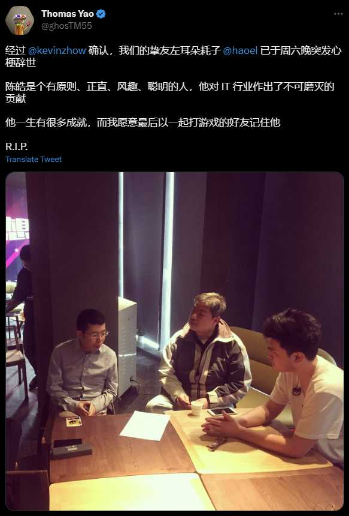
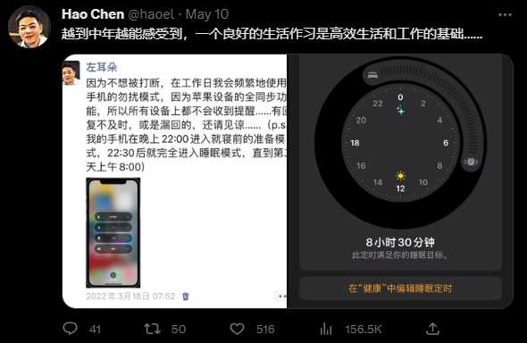

刚刚看到一条消息，非常突然！

就在几天前的 5 月 10 号，耗哥和我还在微信上聊了四十多分钟视频，没想到 13 号晚上人就没了。刚看到这个消息，以为是在恶搞，但是冷静下来一番查证，基本属实了。
5 月 8 号，我读了他最新发表的《是微服务架构不香还是云不香》，通过邮件联系了他，毕竟 Serverless 也是我现在特别关注的领域。他回复约我视频沟通，这才有了 10 号的机缘。
我看到技术圈中一些他生前的朋友纷纷惋惜，也有懊悔拖延了与他见面的。我很庆幸当时读了文章有想法就立即实施，而没有拖着“过阵子再说”，要不然也没有“以后”了。

这条推文就是耗哥和我聊到过往工作经历后的有感而发，也算是对晚辈的一份劝诫吧。我也认为卖惨式的“奋斗”并不能打动市场，顶多显得失败并不是因为“懒惰”。然而，即便是注重作息的耗哥，竟然也以这样突然的方式离开了。
这远不是第一起程序员猝死，也不会是最后一起。各行各业，有梦想的人，注定痛并快乐着！
希望包括我在内的所有朋友，多注意身体健康，无效的竞争有害无益，行业内卷犹如杀人的刀。活着，才能见证奇迹！
最后，希望耗哥回首往事，欣慰没有辜负自己的梦想！安息！